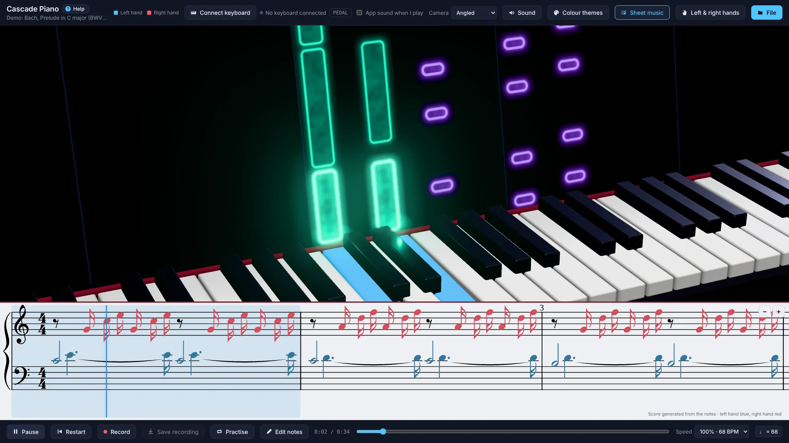
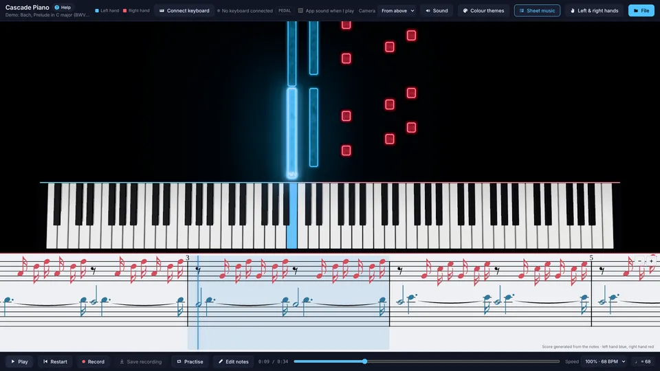
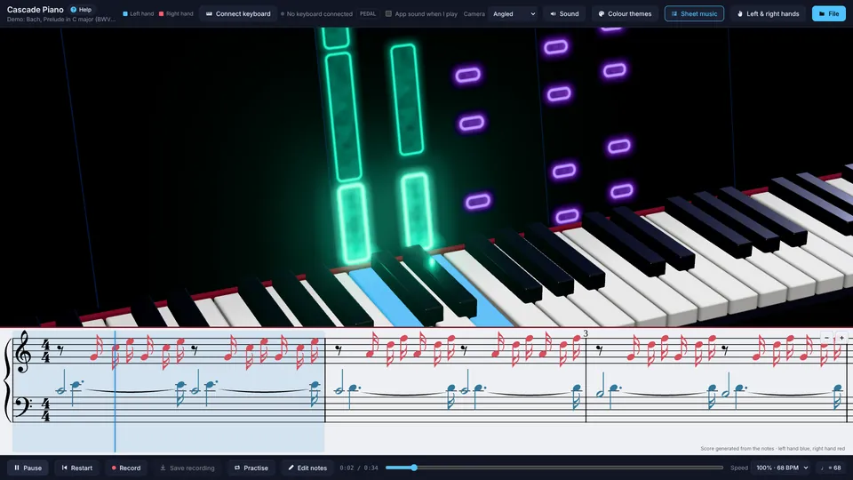
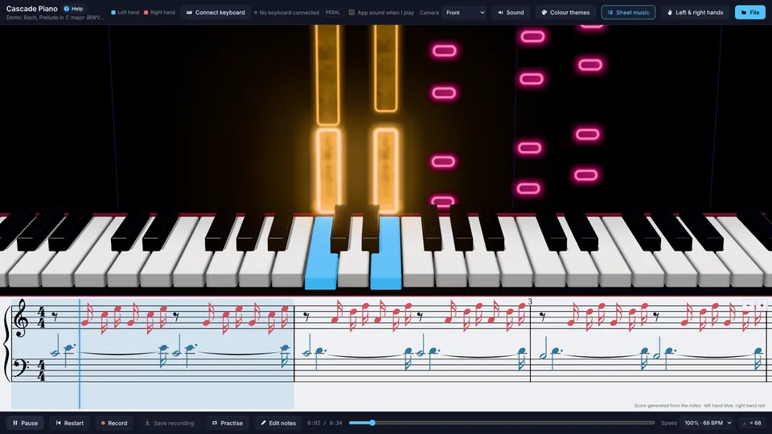

Learn to play your favourite songs the easy way
Cascade Piano turns any MIDI file or sheet music PDF into glowing notes that fall onto a 3D piano. Watch which keys to press, then play along. No need to read music.
Free download · No account needed

From a song file to your fingers in three steps
Open a song
Drop in a MIDI file, a MusicXML file, or a sheet music PDF. Cascade Piano reads the notes for you, including PDFs from MuseScore and other music programs.
Watch the notes fall
Every note becomes a coloured light that lands on the key you need to press, left hand in one colour and right hand in another. The sheet music scrolls along underneath.
Play along
Slow it down, loop the tricky bit, or practise one hand at a time. Plug in a digital keyboard and the app scores how many notes you hit on time.
Everything you need to learn a song
Made for people who want to play real songs, not just exercises.
Reads sheet music PDFs
Open a sheet music PDF and it becomes falling notes, with repeats, ties, triplets and first and second endings handled for you.
Practice tools
Loop any bars, change the speed, and choose to play the left hand, the right hand or both while the app plays the rest.
Connect your keyboard
Plug in any digital piano or keyboard with USB. The keys you press light up on screen, and practice runs give you a score.
Sheet music alongside
The real sheet music scrolls in time with the falling notes, so you learn to read music as you go, if you want to.
Make videos
Export a video of any song in 1080p, 4K, or vertical for TikTok, Shorts and Reels, with the sheet music and real piano sound.
Make it yours
Choose from over a dozen colour themes and several camera angles, record yourself playing, and fix any note with the built-in editor.
Pick the view that suits you



Try it free. Pay once if you love it.
No subscription. No account. One payment and it's yours.
Free version
Everything works, with a couple of limits
- Unlimited MIDI and MusicXML songs
- All practice tools and keyboard support
- Read 2 sheet music PDFs
- Videos carry a small "Made with Cascade Piano" mark
Full version
Unlock everything with a licence key
- Read as many sheet music PDFs as you like
- Videos without the watermark
- Use it on up to 2 computers
- Free updates, installed automatically
Secure checkout by Polar · Your key arrives straight away by email
Frequently asked questions
Do I need to be able to read music?
No. That's the whole idea. The falling notes show you exactly which key to press and when, so you can play songs without reading sheet music. The sheet music is shown too, for anyone who wants to learn it along the way.
What kinds of song files can it open?
MIDI files (.mid), MusicXML files (.musicxml, .mxl) and sheet music PDFs. PDFs made by music software such as MuseScore, Sibelius or Finale work best. Scanned or photographed sheet music is harder to read and may need a few notes fixed in the built-in editor.
Do I need a keyboard or piano?
You can watch and learn without one, but it's more fun to play along. Any digital piano or keyboard that connects to your computer with a USB cable will work. The app shows the keys you press and can score your practice runs.
Does it work on Mac, iPad or phones?
Not yet. Cascade Piano is for Windows 10 and Windows 11 (64-bit) computers.
Windows says "Windows protected your PC" when I install it. Is it safe?
Yes. Windows shows this message for apps from small developers that it hasn't seen many times before. Click More info, then Run anyway to install.
How do I unlock the full version after I buy?
Your licence key appears straight after payment and is emailed to you. In the app, open File → Licence key…, paste the key in and click Unlock. Your computer needs to be online just for that moment.
Can I use it on more than one computer?
Yes, each licence key works on up to 2 computers. If you get a new computer, remove the key from the old one first (File → Licence key… → Remove) and use it on the new one.
Is it a subscription?
No. You pay once and keep it, updates included.
Can I get a refund?
Yes. If you're not happy, email us within 7 days of buying and we'll refund you. Try the free version first to make sure it's right for you.
I need help. How do I contact you?
Email support@cascadepiano.com and we'll get back to you as soon as we can.
Your favourite song is waiting
Download Cascade Piano free and play your first song in minutes.